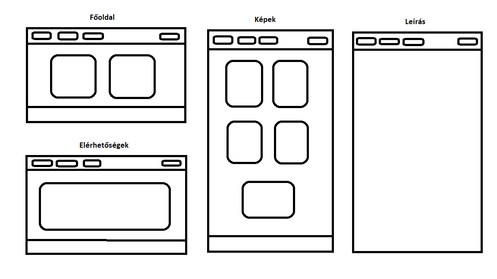

Így készült a weboldalam
Az oldalak vázlata:

Nehézségek:
Mivel a gyakorlatokon mi nem tanultunk egyáltalán arról, hogy hogyan kell html-ben programozni így elég nehéz volt megcsinálni az oldalt. Az osztályozásokkal volt több gondom, mert egyfolytában összekavarodtak és nem akarták azt csinálni, amit megírtam css-ben. Ezek mellett a képek elrendezése is sok problémát okozott.
Felhasznált oldalak:
- W3Schools
- YouTube
- Árnyék generátor
- Ezek mellett sokat segített a Teamsbe feltöltött YouTube-os tananyag és a példa weboldalak.